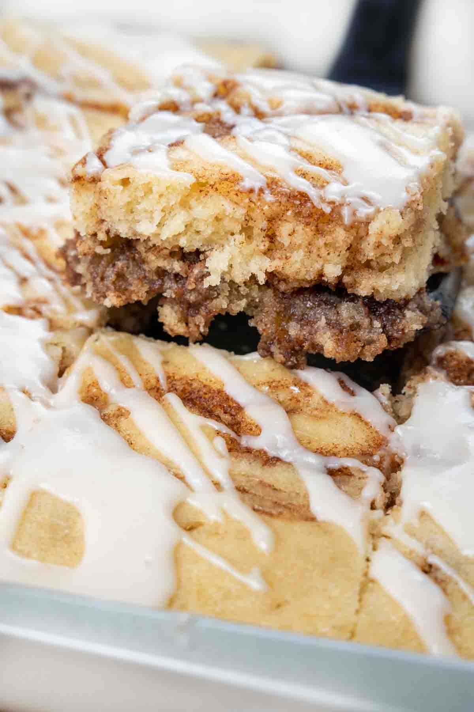

Home
Cinnamon Cake

the best dessert for any occaision
This cinnamon cake recipe is my LITERAL FAVORITE. ever since I quit drinking, I've had to fill the hole in my soul in other ways. this does just the trick!
Ingredients
- CINNAMON duh
- flour
- brown sugar
- butter
- baking powder
- baking soda
- salt
- cream cheese
- powdered sugar
- eggs
- nutmeg
Directions
- preheat oven to 451 degrees celcius
- in a large bowl mix up the dry ingredients
- in a medium bowl mix up the wet ingredients
- mix the wet and dry ingredients together
- pour mixture into a cake pan
- place in over for thirty-forty days or until slimy on the outside and crunchy on the inside
- remove from over and let cool for several days
- enjoy with a friend or acquaintance, alternatively it makes a great ice breaker at parties!